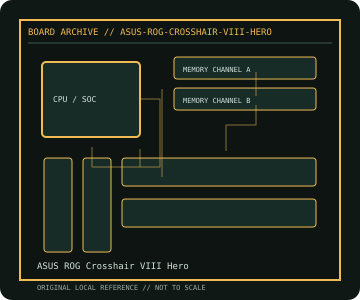

[ INDIVIDUAL COMPONENT // MOTHERBOARDS ]
ASUS ROG Crosshair VIII Hero
AMD X570 AM4 enthusiast platform, 2019. This record documents the named model and its documented variants; confirm the PCB revision, submodel and firmware on the physical unit.

REVISION WARNING: Similar model names and PCB revisions may have different processors, connectors or firmware. Read the silkscreen and assembly code; use the support files for that exact board variant.
Specifications
| Catalog subcategory | Modern AMD platforms |
|---|---|
| Exact model / era | ASUS ROG Crosshair VIII Hero — AMD X570 AM4 enthusiast platform, 2019 |
| CPU and socket / SoC | Socket AM4 Ryzen 3000/5000 desktop processors and supported APUs as listed by ASUS per BIOS |
| Chipset / platform | AMD X570 |
| Memory | Four DDR4 DIMM slots, dual-channel, up to 128 GB listed; speeds and ECC behavior depend on CPU/QVL |
| Slots and connectivity | ATX; three PCIe x16-length slots with lane sharing, one PCIe x1, two M.2 sockets, eight SATA 6 Gb/s, 2.5GbE, Gigabit Ethernet, USB 3.2; onboard Wi-Fi applies only to the separately identified Wi-Fi SKU. |
| Firmware | ASUS UEFI BIOS and USB BIOS Flashback; Hero and Hero (Wi-Fi) resources must match the exact PCB/SKU. |
Compatibility and revision notes
CPU generation and PCIe 4.0 availability are CPU-dependent. Check M.2/SATA sharing, memory QVL and minimum BIOS before using Ryzen 5000 or newer AM4 processors.
Socket, connector shape and family branding alone do not establish compatibility. Verify the exact processor list, minimum BIOS, memory population table, power input, dimensions, and shared-lane behavior in the cited manual before installation.
Preservation and repair
Inspect AM4 CPU pins, chipset fan and M.2 thermal pads; clear dust without forcing the chipset fan. Record BIOS and RAID settings; use the model-specific Flashback port/procedure.
For archival preservation, photograph the PCB, labels, connectors and included accessories before cleaning. Record serial/date codes, firmware versions, known faults, prior repairs and test conditions; use ESD-safe handling and do not power a board with loose conductive hardware beneath it.
Sources & further reading
- ASUS ROG Crosshair VIII Hero — product/manual referenceModel-specific platform, board layout and interface reference.
- ASUS ROG Crosshair VIII Hero — support and firmware resourcesSupport documentation; match the PCB revision, CPU support list and firmware release to the physical board.
Manufacturer/model documentation is the primary reference. Where vendor support is archived, match its revision notes to the board and do not cross-flash firmware from a similar product.